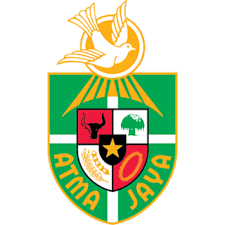

Universitas di Jakarta
-Universitas Mercu Buana-
Universitas Mercu Buana terletak di Jalan Meruya Selatan No.1, Joglo, Kecamatan Kembangan, Jakarta Barat. Universitas Mercu Buana menempati peringkat 55 di Indonesia dan peringkat 3.771 di dunia menurut webometrics 2024.

-Universitas Bina Nusantara-
Universitas Bina Nusantara memiliki 6 kampus di jakarta, yang di mana 1 kampus berada di Alam Sutera, 3 kampus berada di Kemanggisan dan 2 kampus berada di Senayan. Universitas Bina Nusantara menempati peringkat 13 di Indonesia dan 1.441 di dunia menurut Webpmetrics 2024.

-Universitas Atma Jaya-
Universitas Atma Jaya memiliki 3 kampus di Jakarta, yang berada di Semanggi, Pluit, Dan BSD. Universitas Atma Jaya menempati peringkat 65 di Indonesia dan peringkat 4.450 di dunia menurut webometrics 2024.